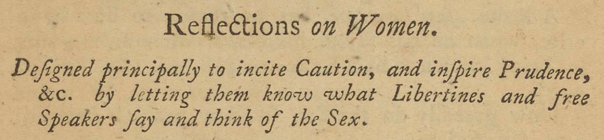
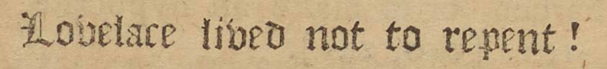

“Designed principally to incite Caution, and inspire Prudence, &c. by letting them know what Libertines and free Speakers say and think of the Sex.”
<" style="width:100%;height:auto;">Under the subject of "Repentance" in Clarissa, shown on this page, the editor intervenes with commentary between two quotations, declaring: “Lovelace lived not to repent!”
<" style="width:100%;height:auto;">This declaration clarifies an early quotation, in which Lovelace claims that he wants “one day to be a reformed man,” and the one immediately after, in which Lovelace claims he has repented “a thousand times” (both quotations found in v.5, pp. 396 of the original). It is likely that, as the editor, Richardson included this declaration to drive a “correct” reading of Lovelace. By printing the declaration in a different font, Richardson calls attention to himself as editor and curator of not only this book, but of the reader’s reading experience in general. His choice of a Blackletter typeface — which was used to print the Gutenberg Bible and was most common in the 15th and 16th centuries — is associated with 'antiquated' knowledge and can thus be read as an added assertion of editorial authority. In short, Richardson's work in the print shop, overseeing the book's physical creation, adds editorial authority to his authorial one.
{Return to Tour Table of Contents}